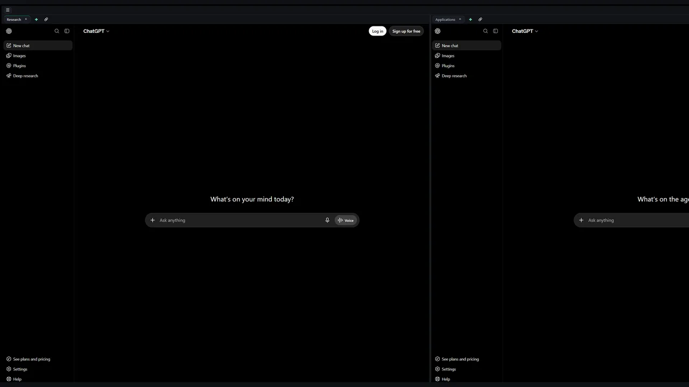

ChatDeck
Your ChatGPT and Claude conversations, arranged like a workspace: side-by-side panes, tab groups per project, and terminal tabs next to your chats.

First launch
Windows
The installer is not code-signed yet. If Windows says "Windows protected your PC", choose More info, then Run anyway. ChatDeck installs for you alone and updates itself from Settings.
Mac
Open the dmg and drag ChatDeck to Applications. The app is not notarized yet, so macOS blocks the
first launch: open System Settings, Privacy & Security, and choose Open Anyway.
If it says the app "is damaged" instead, run
xattr -dr com.apple.quarantine /Applications/ChatDeck.app in Terminal once.
Updates are manual for now.